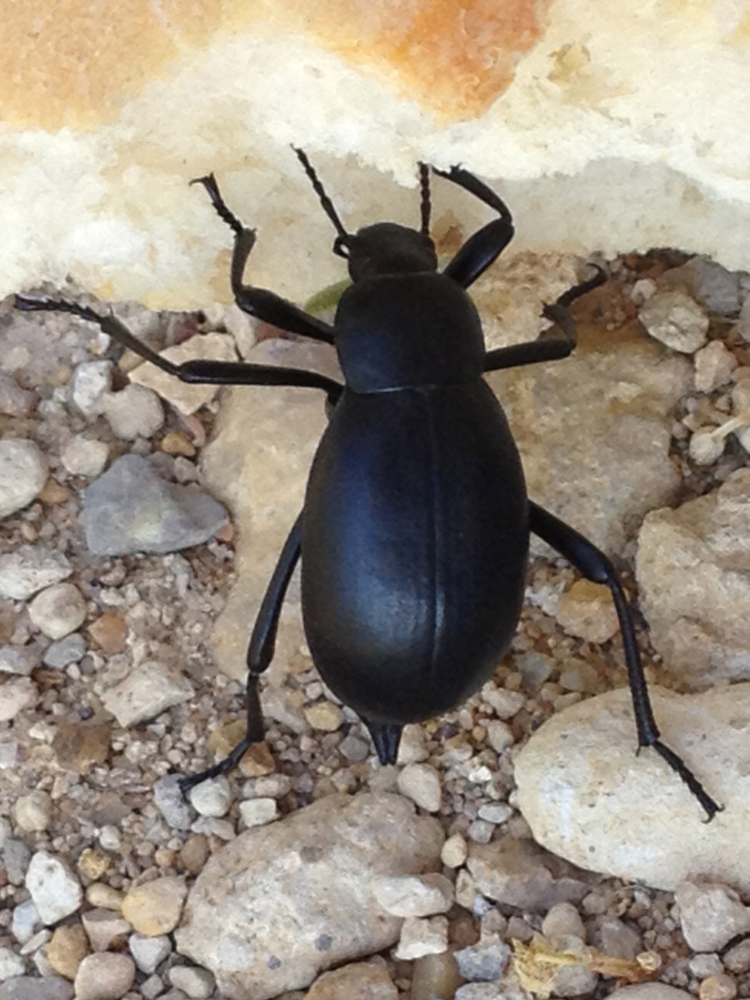

Son escarabajos rechonchos, con élitros muy convexos. Presentan un gran dimorfismo sexual. El pronoto de los machos presenta un amplio relieve superior transversal rematado por dos tubérculos romos, que se prolonga lateralmente, desde el que desciende en concavidad hasta la cabeza.  Ésta es de tamaño menor y está rematada por un pronunciado cuerno clipeal incurvado hacia atrás que emerge entre la frente y la estructura bucal (también llamado cuerno). En las hembras el relieve pronotal está atenuado, sin tubérculos, y el cuerno clipeal queda reducido a un pequeño tubérculo apuntado. Las antenas son pequeñas, tienen diez artejos y los tres últimos están dispuestos en forma de láminas que cuando están agrupadas parecen una pequeña maza. Los bordes de élitros y pronoto aparecen casi negros y engrosados, y entre ambos élitros acompañados de sendas hileras punteadas. Los fémures de las patas y rebordes ventrales presentan una pilosidad marcadamente pelirroja, que con el tiempo se puede ir perdiendo. Los tegumentos son brillantes, de color pardo rojizo. Su tamaño oscila entre 30 y 45 mm.